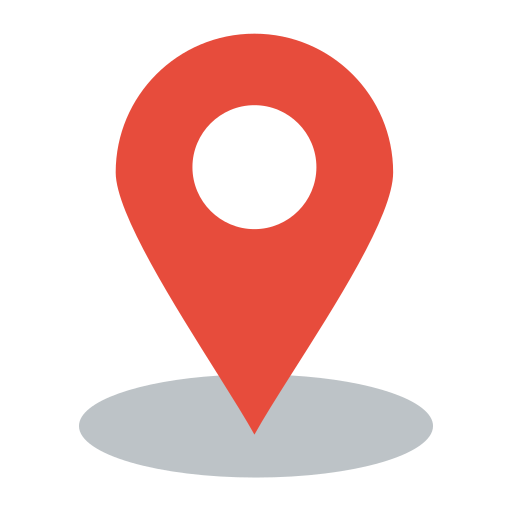

IT Project Manager
Александр Лошманов
IT Project Manager, который глубоко погружается в каждый проект. Строю самоорганизованные команды, внедряю прозрачные процессы и сам участвую в технической реализации там, где это ускоряет результат. Специализируюсь на legacy-коде и сложных интеграциях.
1+
год опыта
10+
проектов
1 млн
макс. бюджет
B2B/B2C
сегменты

Астрахань, Россия • Удалённо01 — Обо мне
Профиль
IT Project Manager, который глубоко погружается в каждый проект, не ограничиваясь ролью координатора. Строю самоорганизованные команды, где прозрачность процессов и комфортная рабочая среда напрямую влияют на качество продукта.
В командно-административном подходе эффективно распоряжаюсь ресурсами, используя техническую экспертизу для решения задач без избыточной нагрузки на команду. Выполняю frontend и backend доработки там, где это оптимизирует процесс. 10+ завершенных проектов, управление портфелями с бюджетами до 1 млн рублей, координация кросс-функциональных команд (20–25 специалистов).
Специализируюсь на проектах с нестандартной архитектурой, legacy-кодом и сложными интеграциями. Готов применять опыт для достижения амбициозных целей в продуктовых и аутсорсинговых компаниях, ориентированных на web и mobile разработку.
В командно-административном подходе эффективно распоряжаюсь ресурсами, используя техническую экспертизу для решения задач без избыточной нагрузки на команду. Выполняю frontend и backend доработки там, где это оптимизирует процесс. 10+ завершенных проектов, управление портфелями с бюджетами до 1 млн рублей, координация кросс-функциональных команд (20–25 специалистов).
Специализируюсь на проектах с нестандартной архитектурой, legacy-кодом и сложными интеграциями. Готов применять опыт для достижения амбициозных целей в продуктовых и аутсорсинговых компаниях, ориентированных на web и mobile разработку.
02 — Опыт работы
Карьерный путь
Руководитель проектов
Delta
Разработка программного обеспечения
11.2024 – 12.2025 · 1 г. 2 мес.
Ключевые достижения
- Завершил 10+ проектов полного цикла для B2B и B2C: от пресейла до поддержки
- Управлял командами до 20 человек, обеспечивая техподдержку 10+ клиентам одновременно
- Внедрил практику Daily Stand-up и структурированную проектную документацию
- Участвовал в адаптации новых сотрудников и собеседованиях менеджеров
Функциональные обязанности
- Формирование продуктовой стратегии и выявление требований
- Управление проектами: планирование целей, задач, сроков, рисков, распределение ресурсов
- Запуск проектов, техподдержка и комплексное SEO-продвижение
- Мотивация команды и повышение эффективности коммуникации
Руководитель отдела логистики
Транспортная компания
Услуги перевозки грузов под ключ
11.2019 – 10.2024 · 5 лет
Ключевые достижения
- Обучил и ввёл в должность более 100 новичков
- Внедрил CRM Bitrix24 в отделе: самостоятельно изучил платформу, затем обучил сотрудников
- Подключил геолокацию для транспортных средств — это позволило видеть опоздания заранее и избегать срывов сроков
- Интегрировал аукционную площадку с ATI.SU для автоматизации добавления грузов
Функциональные обязанности
- Руководил группой до 25 человек, в пиковые периоды — до 50 человек
- Координировал до 40 логистических операций в день
- Планировал и контролировал график, решал проблемы в реальном времени, держал фокус на сроках и качестве
- Мотивировал людей, разбирал ошибки за каждый день, искал решения совместно с командой
03 — Ключевые проекты
Портфель проектов
04 — AI Кейсы
Практические AI кейсы
🤖 Практические кейсы по использованию нейросетей в реальных проектах
Здесь я делюсь опытом создания сложных систем и интерфейсов с помощью AI-инструментов
Здесь я делюсь опытом создания сложных систем и интерфейсов с помощью AI-инструментов
🤖 AI Portfolio
Портфолио-сайт с помощью Claude
Создание профессионального портфолио с помощью Claude — полноценный сайт с современным дизайном, адаптивной вёрсткой и интерактивными элементами.
Задача: Быстро создать качественное портфолио для презентации навыков PM/Scrum Master с акцентом на технические компетенции.
Решение: Использовал Claude для генерации структуры, дизайна и кода. Итеративно дорабатывал детали, добавлял функционал пагинации, модальных окон для проектов, тёмную/светлую тему. Результат — профессиональный сайт за несколько часов вместо нескольких дней разработки.
Технологии: Claude AI, HTML5, CSS3 (градиенты, анимации), JavaScript (модальные окна, пагинация, переключение темы), адаптивная вёрстка, SEO-оптимизация
Задача: Быстро создать качественное портфолио для презентации навыков PM/Scrum Master с акцентом на технические компетенции.
Решение: Использовал Claude для генерации структуры, дизайна и кода. Итеративно дорабатывал детали, добавлял функционал пагинации, модальных окон для проектов, тёмную/светлую тему. Результат — профессиональный сайт за несколько часов вместо нескольких дней разработки.
Технологии: Claude AI, HTML5, CSS3 (градиенты, анимации), JavaScript (модальные окна, пагинация, переключение темы), адаптивная вёрстка, SEO-оптимизация
🤖 AI Design
Информационные страницы Эрмитажа
Дизайн и структура информационных страниц для ticket-ermitage.ru — комплекс страниц с информацией о музее, контактами, режимом работы и услугами.
Задача: Создать удобные информационные страницы, которые гармонично впишутся в существующий дизайн билетной системы Эрмитажа.
Решение с AI: Совместно с Claude спроектировал архитектуру информации, разработал визуальную структуру и дизайн страниц. AI помог с организацией контента, созданием иерархии заголовков, подбором оптимальных UI-паттернов для различных типов информации.
Страницы: Контакты — карта, способы связи, адреса касс; Режим работы — расписание всех зданий; Аудиогид — описание услуги, условия аренды, языки.
Результат: Созданные страницы органично вписались в структуру сайта. Количество обращений в поддержку снизилось на 25%.
Технологии: Claude AI, Bitrix Framework, HTML5/CSS3, адаптивная вёрстка, семантическая разметка
Задача: Создать удобные информационные страницы, которые гармонично впишутся в существующий дизайн билетной системы Эрмитажа.
Решение с AI: Совместно с Claude спроектировал архитектуру информации, разработал визуальную структуру и дизайн страниц. AI помог с организацией контента, созданием иерархии заголовков, подбором оптимальных UI-паттернов для различных типов информации.
Страницы: Контакты — карта, способы связи, адреса касс; Режим работы — расписание всех зданий; Аудиогид — описание услуги, условия аренды, языки.
Результат: Созданные страницы органично вписались в структуру сайта. Количество обращений в поддержку снизилось на 25%.
Технологии: Claude AI, Bitrix Framework, HTML5/CSS3, адаптивная вёрстка, семантическая разметка
05 — Компетенции
Навыки
Project Management
Управление проектами полного цикла
Agile / Scrum / Kanban / Waterfall
Управление командой (20–25 чел.)
Stakeholder Management
Бюджетирование & Planning
Риск-менеджмент
Проектная документация
Presale & UX Research
Техническая экспертиза
PHP / Laravel Backend
HTML / CSS / JavaScript
Vue.js Frontend
MySQL / SQL Architecture
API & Интеграции
Bitrix CMS
WordPress / Drupal / Modx
Инструменты & Платформы
Jira / Confluence / Trello
Битрикс24 / CRM
Figma / Design Systems
Git / Version Control
ISPManager / DevOps
SEO & Analytics
Test Case Management
AI / Prompt Engineering
06 — Образование
Образование и сертификаты
Высшее
Астраханский Государственный Технический Университет (2015)
07 — Развитие
Профессиональное развитие
📚 Патрик Ленсиони
«Пять пороков команды»
📚 Э. Стеллман, Дж. Грин
«Постигая Agile: ценности, принципы, методологии»